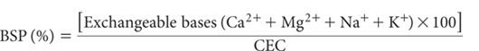

Base saturation percentage is calculated from the sum of exchangeable bases (Ca2+ + Mg2+ + Na+ + K+; method is optional) and soil CEC (method is optional), each of these expressed as cmolc/kg on an oven-dry basis. Accordingly, base saturation is the portion of soil CEC accounted for by exchangeable bases.
Base saturation is commonly used as an indicator of soil fertility but does not reflect imbalances in relative proportions of individual exchangeable bases. Generally, BSP values of <20, 20–60, and >60 are rated as low, medium and high, respectively (Landon 1984).
In addition to that mentioned in Method 15K1, BSP values are used as indicators of fertility status in the FAO-UNESCO (1974) soil classification.

all expressed as cmolc/kg on an oven-dry basis.
Report BSP (%) on an oven-dry basis, noting the codes used for the exchangeable bases and CEC methods.